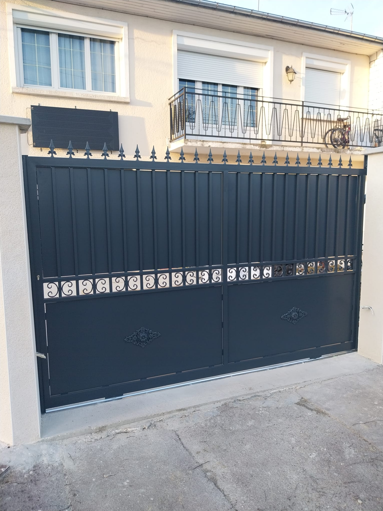

|
France Metal 77 a été fondée par M. OZCAN. L'entreprise se distingue par son expertise dans les travaux de métallerie, offrant des services de fabrication et de réalisation de couvertines, charpentes, zingueries, ainsi que la conception et l'installation de portes et fenêtres. En tant qu'entité indépendante, France Metal 77 a su établir des relations privilégiées avec divers clients, parmi lesquels la Mairie de Drancy joue un rôle prépondérant en tant que client professionnel. Cette relation privilégiée avec notre client professionnel principal nous permet de répondre de manière précise et efficace à ses attentes et besoins, tout en garantissant la qualité et la fiabilité de nos services. En outre, nous servons également une clientèle de particuliers, offrant ainsi une gamme complète de services à une variété de clients. En constante évolution, notre entreprise s'est également engagée dans l'expansion de ses activités, s'adaptant ainsi aux exigences du marché et offrant des solutions toujours plus complètes à notre clientèle, de A à Z. |

|